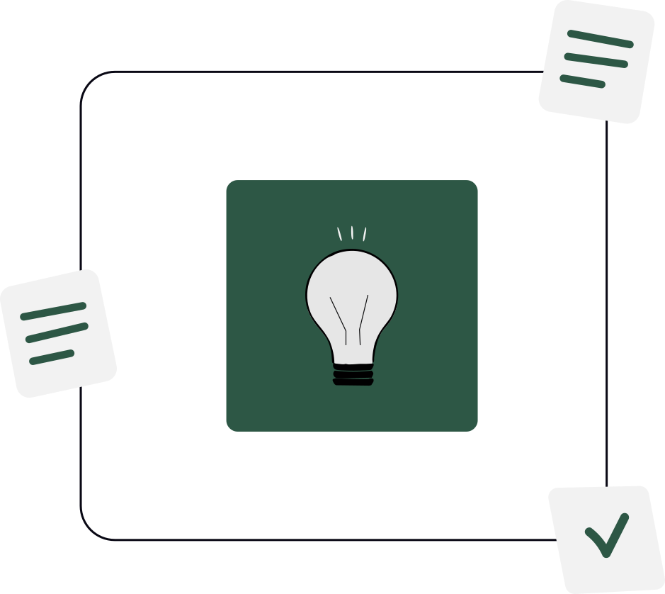
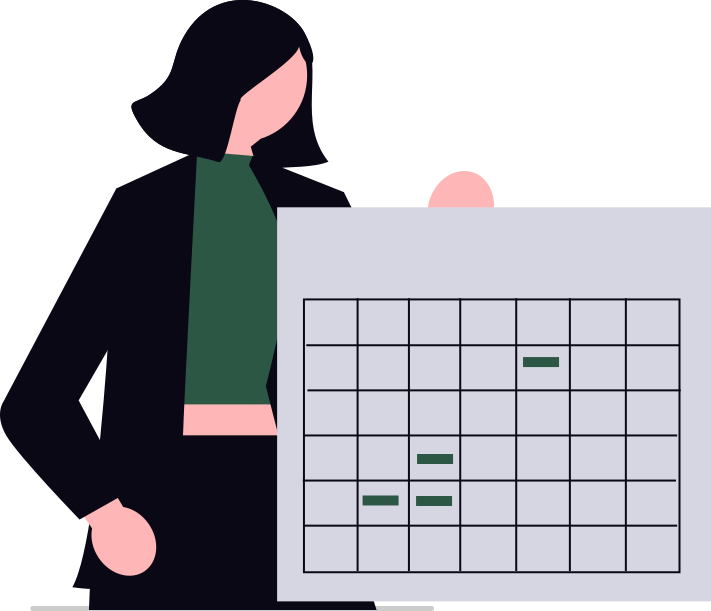
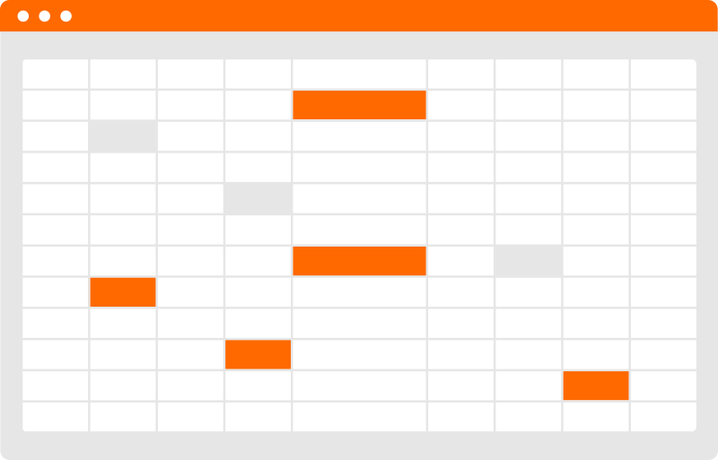

Put AI to work on the right problem.
Everyone is selling AI. The hard part is knowing which part of your business it should touch first.
We help you find the workflow worth fixing, then put AI to work on it with tools your team can run.

Sound familiar?
Most AI decisions start with one of these, not a strategy session:
The rekeying
Your team types the same information into two or three systems. Quotes, orders, client intake. Everyone knows it wastes hours; nobody has time to fix it.
The subscriptions
A few people bought AI tools. A pilot started. Nobody agreed what they are for, so it is hard to say whether any of it is working.
The budget question
You can see a dozen places AI might help. You need to decide which one deserves the money and attention first.
What progress looks like.
- One problem, clearly chosen.You know which workflow to start with and why, and your partners and managers agree.
- A tool your team runs.Built on established platforms, with the people who use it trained to operate it.
- Less guessing.The next AI sales pitch gets measured against a plan you already have.
Where we see this.
Manufacturing
Quoting, order entry, and shop-floor paperwork that moves between people and systems by hand.
Professional services
Client intake, document review, and reporting that eat billable time.
Keep what's already working.
You don't need to replace your software to get value from AI.

Defined scope
Every engagement has a clear deliverable and end point before it starts.
Standalone engagements
No required sequence. Go further only if the first piece of work earned it.

Your tools can stay
Where your current software already fits, we work with it.
Knowledge stays with you
Your team keeps the reasoning, documents, and skills to carry the work forward.

Who you'd be working with.
Ben Nichols, Founder.
Ben has been building AI and IT solutions for over fifteen years and also teaches how it works for executives and graduate students through Syracuse University.
Co-founder and COO, Directlink
Builds and runs conversational AI for banks and credit unions, so the advice comes from operating AI, not only studying it.
AI Professor, Syracuse University
Explains how AI works in plain language, for classrooms and for leadership teams.
Start with one problem.
See all the ways we work, or book a call to talk through the workflow on your mind.
See how we help